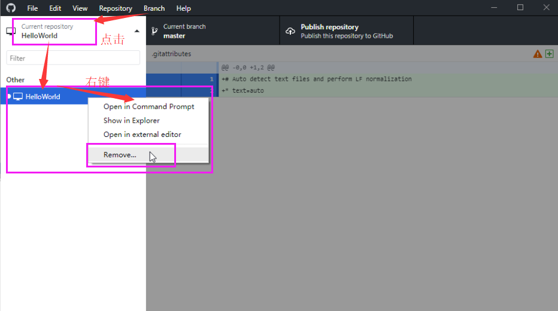

Git
参考：慕课网 - 版本管理工具介绍(Git篇-)
制作日期：2018-08-31 - 2018-09-04
1、简介
备份文件
记录历史
回到过去
多端共享
团队合作
2、Linux（CentOS）安装
# yum install git
确认一下，y
git --help // 安装完成后，帮助命令
3、Windows下载
Windows下载、安装
直接打开，自动会安装到C盘，什么都不用操作，跟谷歌浏览器一样无语，不过我去C盘找到它，剪切到了D盘，还好可以用。
打开之后我什么都不填写，进入到了这个界面，这些东西变化太快，看着办好了
弹框
进入该界面
设置
登录，或者一开始就登录，我这里一开始没有登录，随机应变哈

4、新建一个项目
GitHub官网新建仓库
创建完成
5、Linux环境基本操作
检出项目到本地
复制链接
|
[root@localhost
~]# mkdir git [root@localhost
~]# cd git // 复制链接之后，使用git
clone 命令检出到本地 [root@localhost
git]# git clone https://github.com/yw-forGit/HelloWorld.git Cloning into 'HelloWorld'... remote: Counting objects: 3, done. remote: Compressing objects: 100% (2/2), done. remote: Total 3 (delta 0), reused 0 (delta 0), pack-reused 0 Unpacking objects: 100% (3/3), done. [root@localhost
git]# ll total 0 drwxr-xr-x. 3 root root 35 Sep 3 22:11 HelloWorld [root@localhost
git]# cd HelloWorld/ [root@localhost
HelloWorld]# ll total 4 -rw-r--r--. 1 root root 50 Sep 3 22:11 README.md // 这些内容就是在GitHub新建仓库编写的内容 [root@localhost
HelloWorld]# cat README.md # HelloWorld 第二次在这里向世界问好啦 [root@localhost
HelloWorld]# |
第一次提交
新编辑文件
|
// 编辑、新建 [root@localhost
HelloWorld]# vi test1 [root@localhost
HelloWorld]# cat test1 // 这是我新编辑的内容 今天是x月x日，我吃了一个苹果 // 查看状态 [root@localhost
HelloWorld]# git status // 位于master分支 # On branch master // 未跟踪的文件是test1文件（提示：使用git
add <file>命令可以提交该file的内容） # Untracked files: # (use "git add <file>..."
to include in what will be committed) # # test1 // 提交为空，但没有可跟踪的文件（提示：使用git add进行跟踪） nothing added to commit but
untracked files present (use "git add" to track) [root@localhost
HelloWorld]# |
跟踪（git add）
|
// 那就跟踪下吧 [root@localhost
HelloWorld]# git add test1 [root@localhost
HelloWorld]# git status # On branch master // 要提交的变更：新文件test1 （提示：使用git
reset HEAD <file>命令将变更撤出暂缓区） # Changes to be committed: # (use "git reset HEAD
<file>..." to unstage) # # new file: test1 # [root@localhost
HelloWorld]# |
提交到本地仓库（git commit）
|
// 提交仅仅是提交到本地仓库，GitHub官网还是没有的 [root@localhost HelloWorld]# git commit |
回车之后，会显示下图，给我们输入描述，按i进行编辑，与vi、vim编辑一样，编辑完，Esc退出编辑模式，使用:wq保存退出即可。
退出之后
|
// 这是提交的描述 [master
1bed97c] 新加了一个test1文件 Committer: root <root@localhost.localdomain> // 你的姓名和邮箱地址基于登录名和主机名进行了自动设置。请检查它们正确与否。你可以通过下面的命令对其进行明确地设置以免再出现本提示信息： Your name and email address
were configured automatically based on your username and hostname. Please check that they are accurate. You can suppress this message by setting them explicitly: git config --global user.name "Your Name" git config --global user.email
you@example.com // 设置完毕后，你可以用下面的命令来修正本次提交所使用的用户身份 After doing this, you may fix the
identity used for this commit with: git commit --amend --reset-author 1 file changed, 1 insertion(+) create mode 100644 test1 [root@localhost
HelloWorld]# [root@localhost
HelloWorld]# git status # On branch master // 你的分支共一个提交。（使用git push命令来发布你的本地提交） # Your branch is ahead of 'origin/master'
by 1 commit. # (use "git push" to publish your
local commits) # // 无文件要提交，干净的工作区 nothing to commit, working directory clean [root@localhost
HelloWorld]# |
push到GitHub官网（git push）
|
// push到GitHub上，如果之前没有配置全局登录信息，则下面会提示输入用户名、密码 [root@localhost
HelloWorld]# git push warning: push.default is unset; its implicit value is changing in Git 2.0 from 'matching' to 'simple'. // 若要不再显示本信息并在其默认值改变后维持当前使用习惯，进行如下设置： To squelch this message and maintain the current behavior after
the default
changes, use: git config --global push.default matching // 若要不再显示本信息并从现在开始采用新的使用习惯，设置： To squelch this message and adopt the new behavior now, use: git config --global push.default simple See 'git
help config' and search for 'push.default' for further information. (the 'simple' mode was introduced in Git 1.7.11. Use the similar mode 'current' instead of 'simple' if you sometimes use older versions of Git) // 输入GitHub的用户名 Username for 'https://github.com': yw_forgit@163.com // 密码 Password for 'https://yw_forgit@163.com@github.com': Counting objects: 4, done. Compressing objects: 100% (2/2), done. Writing objects: 100% (3/3), 348 bytes
| 0 bytes/s, done. Total 3 (delta 0), reused 0 (delta 0) To https://github.com/yw-forGit/HelloWorld.git 10feb52..1bed97c master -> master // 再查看状态 [root@localhost
HelloWorld]# git status # On branch master // 无文件要提交，干净的工作区 nothing to commit, working directory clean [root@localhost
HelloWorld]# |
去官网看看，已经提交了
6、Windows环境基本操作
检出项目到本地
打开官网，进行克隆，然后打开客户端
那就remove掉吧

干干净净的
回到官网，重新克隆
克隆完成，空白不要慌。
点击“History”，可以看到提交过的文件
第一次提交
编辑文件
就会出现下图
右键之后，出现下图，选择Show in Explorer，
用文本编辑器打开，新添加一行文字
再随便建立一个bak文件，后面用到
提交到本地
回到GitHub界面，最后选择提交
哎呀，报错了。Commit failed - exit code 128 received, with output: '*** Please tell me who you are.
我去，去网站看到这样操作一遍就好了，但是我什么都没有改，Name、Email都已经有了的。
然后再次提交，就好了。但仅仅是提交到本地
push到官网
点击下图的标注部分，即可
看下官网，哎呀，bak文件其实不用提交的，一般都是编辑器自动生成的备份文件。
忽略文件
忽略固定后缀文件
然后就会出现这个文件，该文件就是记录哪些文件被忽略的，建议提交上去，这样一个团队的忽略后缀都是一样的。
7、解决冲突
本来在第6节的时候，在Windows时，test1被改成了下图的样子。
但是在第5节，Linux本地仓库还是这样的版本
|
[root@localhost
HelloWorld]# cat test1 今天是x月x日，我吃了一个苹果 |
本来应该是先git pull拉取一下代码再修改的，但是这里故意制造冲突。下面是Linux的操作
|
[root@localhost
HelloWorld]# pwd /root/git/HelloWorld [root@localhost
HelloWorld]# ll total 8 -rw-r--r--. 1 root root 50 Sep 3 22:11 README.md -rw-r--r--. 1 root root 42 Sep 3 22:15 test1 // Linux本地仓库跟GitHub官网的不一样了 [root@localhost HelloWorld]# cat
test1 今天是x月x日，我吃了一个苹果 [root@localhost HelloWorld]# vi
test1 // 可以发现增加了一句话 [root@localhost HelloWorld]# cat
test1 今天是x月x日，我吃了一个苹果 我是第一个改了这里 [root@localhost HelloWorld]# git status # On branch master # Changes not staged for commit: # (use
"git add <file>..." to update what will be committed) # (use
"git checkout -- <file>..." to discard changes in working
directory) # # modified: test1 # no changes added to commit (use "git
add" and/or "git commit -a") [root@localhost HelloWorld]# git
add test1 [root@localhost HelloWorld]# git
commit [master 2794d53] 我是第一个修改的人提交了代码 Committer: root <root@localhost.localdomain> Your name and email address were configured
automatically based on your username and hostname.
Please check that they are accurate. You can suppress this
message by setting them explicitly: git
config --global user.name "Your
Name" git
config --global user.email
you@example.com After doing this, you
may fix the identity used for this
commit with: git
commit --amend --reset-author 1 file
changed, 1
insertion(+) [root@localhost HelloWorld]# git
push warning: push.default is
unset; its implicit
value is changing in Git 2.0 from 'matching' to 'simple'. To
squelch this message and maintain the current behavior after the default
changes, use: git
config --global push.default
matching To squelch this
message and adopt the new
behavior now, use: git
config --global push.default
simple See 'git help config' and
search for 'push.default' for
further information. (the 'simple' mode
was introduced in Git 1.7.11. Use
the similar mode 'current'
instead of 'simple' if you
sometimes use older versions of Git) Username for 'https://github.com':
yw_forgit@163.com Password for 'https://yw_forgit@163.com@github.com': To https://github.com/yw-forGit/HelloWorld.git ! [rejected] master ->
master (fetch first) error:
failed to push some refs to 'https://github.com/yw-forGit/HelloWorld.git' // 提示：更新被拒绝，因为远程版本库包含你本地尚不存在的提交 hint: Updates were rejected because the remote
contains work that you do hint: not have locally. This is usually caused by another repository pushing // 你要先合并远程变更，再提交 hint: to the same ref. You may want to first merge the remote changes (e.g., hint: 'git pull') before pushing again. hint: See the 'Note
about fast-forwards' in 'git
push --help' for details. // 那我就去远程官网拉取一下代码 [root@localhost HelloWorld]# git
pull remote:
Counting objects: 9, done. remote:
Compressing objects: 100% (7/7), done. remote: Total
9 (delta 1),
reused 8 (delta 0), pack-reused
0 Unpacking objects: 100% (9/9), done. From https://github.com/yw-forGit/HelloWorld 1bed97c..2d24cee master
->
origin/master Auto-merging
test1 CONFLICT (content): Merge
conflict in test1 Automatic merge failed; fix
conflicts and then commit the result. [root@localhost
HelloWorld]# ll total 8 -rw-r--r--. 1 root
root 50
Sep 3 22:11
README.md -rw-r--r--. 1 root
root 179 Sep 4 02:13 test1 -rw-r--r--. 1 root
root 0
Sep 4 02:13 test1.bak [root@localhost HelloWorld]# cat
test1 今天是x月x日，我吃了一个苹果 // 这段是我Linux自己修改的 <<<<<<< HEAD 我是第一个改了这里 ======= // 这段是我Windows那家伙修改的 今天是x月x日，我吃了一个梨 >>>>>>> 2d24cee58d065f5163ff79c7a652cda4b1ffe550 [root@localhost HelloWorld]# vi
test1 [root@localhost HelloWorld]# vi
test1 // 合并，都保留 [root@localhost HelloWorld]# cat
test1 今天是x月x日，我吃了一个苹果 我是第一个改了这里 今天是x月x日，我吃了一个梨 [root@localhost HelloWorld]# git
status # On branch master # Your branch and 'origin/master' have diverged, # and have 1 and 4 different commits each,
respectively. # (use
"git pull" to merge the remote branch into yours) # # You have unmerged paths. # (fix
conflicts and run "git commit") # # Changes to be committed: # # new
file: .gitignore # new
file: test1.bak # # Unmerged paths: # (use
"git add <file>..." to mark resolution) # # both
modified: test1 # [root@localhost HelloWorld]# git
add test1 [root@localhost HelloWorld]# git
commit |
弹框下图，然后我在首行写了注释
|
[master
0c79dee] 我修改了冲突 Merge branch 'master' of https://github.com/yw-forGit/HelloWorld Committer: root <root@localhost.localdomain> Your name and email address were configured
automatically based on your username and hostname.
Please check that they are accurate. You can suppress this
message by setting them explicitly: git
config --global user.name "Your
Name" git
config --global user.email
you@example.com After doing this, you
may fix the identity used for this commit
with: git
commit --amend --reset-author [root@localhost HelloWorld]# git
push warning: push.default is
unset; its implicit
value is changing in Git 2.0 from 'matching' to 'simple'. To
squelch this message and maintain the current behavior after the default
changes, use: git
config --global push.default
matching To squelch this
message and adopt the new
behavior now, use: git
config --global push.default
simple See 'git help config' and
search for 'push.default' for
further information. (the 'simple' mode
was introduced in Git 1.7.11. Use
the similar mode 'current'
instead of 'simple' if you
sometimes use older versions of Git) Username for 'https://github.com':
yw_forgit@163.com Password for 'https://yw_forgit@163.com@github.com': Counting objects: 10, done. Compressing objects: 100% (6/6), done. Writing objects: 100% (6/6), 750 bytes
| 0 bytes/s, done. Total 6 (delta 2),
reused 0 (delta 0) remote:
Resolving deltas: 100% (2/2),
completed with 1 local object. To https://github.com/yw-forGit/HelloWorld.git 2d24cee..0c79dee master -> master |
回到Windows客户端，点击同步一下，获取GitHub官网的东西
拉取下来
看下冲突的历史也在这里
在Windows客户端也看到合并后的最新结果
Windows解决冲突也是一样的。
8、回到过去、去到未来
查看一下更新的日志
|
[root@localhost
HelloWorld]# git log commit 0c79dee3e450ba9631c8ba4049394bf16bb3e6c3 Merge: 2794d53 2d24cee Author: root <root@localhost.localdomain> Date: Tue Sep 4 02:17:28 2018 -0400 我修改了冲突 Merge branch 'master' of https://github.com/yw-forGit/HelloWorld Conflicts: test1 commit 2794d5368a303fe9eadb865178afbc6ce223d087 Author: root <root@localhost.localdomain> Date: Tue Sep 4 02:09:57 2018 -0400 我是第一个修改的人提交了代码 commit 2d24cee58d065f5163ff79c7a652cda4b1ffe550 Author: yw-forGit <yw_forgit@163.com> Date: Tue Sep 4 13:58:05 2018 +0800 添加了文件后缀忽略 添加了文件后缀忽略 commit 5ba024458da448a4ab232900689b597563b7b377 Author: yw-forGit <yw_forgit@163.com> Date: Tue Sep 4 11:37:55 2018 +0800 Revert "Revert
"在Windows上新加了一行文字"" This reverts commit 1cd123b825daae221ba431ea74aff88f620b4c04. commit 1cd123b825daae221ba431ea74aff88f620b4c04 Author: yw-forGit <yw_forgit@163.com> Date: Tue Sep 4 11:34:52 2018 +0800 Revert "在Windows上新加了一行文字" This reverts commit 5bcf406a9589a6478bddef388dfc37b8d05e9e4b. commit 5bcf406a9589a6478bddef388dfc37b8d05e9e4b Author: yw-forGit <yw_forgit@163.com> Date: Tue Sep 4 11:30:19 2018 +0800 在Windows上新加了一行文字 这里是描述，可以为空，但是上面“在Windows上新加了一行文字”是总结，不能为空 commit 1bed97cfdf9c24fd0cfbbcba2499dc96336ea955 Author: root <root@localhost.localdomain> Date: Mon Sep 3 22:25:16 2018 -0400 新加了一个test1文件 commit 10feb52d94290aab5727cb6ffff53304a53fd48f Author: yw <yw_forgit@163.com> Date: Tue Sep 4 09:52:46 2018 +0800 Initial
commit |
如果卡在这里不知道怎么出来，就按“:q”就能出来了
|
[root@localhost
HelloWorld]# // 当前最新版本 [root@localhost
HelloWorld]# cat test1 今天是x月x日，我吃了一个苹果 我是第一个改了这里 今天是x月x日，我吃了一个梨 // 回到过去。随便恢复到一个版本，要用版本id来恢复 [root@localhost
HelloWorld]# git reset --hard 2d24cee58d065f5163ff79c7a652cda4b1ffe550 HEAD is now at 2d24cee 添加了文件后缀忽略 [root@localhost
HelloWorld]# cat test1 今天是x月x日，我吃了一个苹果 今天是x月x日，我吃了一个梨 // 去到未来。同理，随便恢复到一个版本，要用版本id来恢复 [root@localhost
HelloWorld]# git reset --hard 0c79dee3e450ba9631c8ba4049394bf16bb3e6c3 HEAD is now at 0c79dee 我修改了冲突 [root@localhost
HelloWorld]# cat test1 今天是x月x日，我吃了一个苹果 我是第一个改了这里 今天是x月x日，我吃了一个梨 [root@localhost
HelloWorld]# |
9、建立里程碑
10、分支、分支合并
需要解决紧急的bug时，而这时master主分支又有新的代码提交，但是还没有测试通过，故可以拿master之前的已经验证通过的节点代码作为一个新的分支（叫bug分支吧），然后在此修复紧急bug，就可以越过新提交没有测试过的代码。等待紧急bug解决了，上线了，没有问题了，就把这个bug分支合并到master主分支里面去，这样就不会丢失bug这个分支所修复的代码。
分支
push到bug分支
看到bug分支有历史记录
可以看到master分支，什么都没有改变
合并分支
选中master分支
然后准备合并bug分支到master中
选中被合并的bug分支
然后就能看到master主分支也有bug分支的提交了
同步一下
合并成功